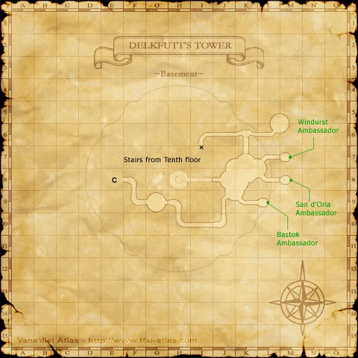
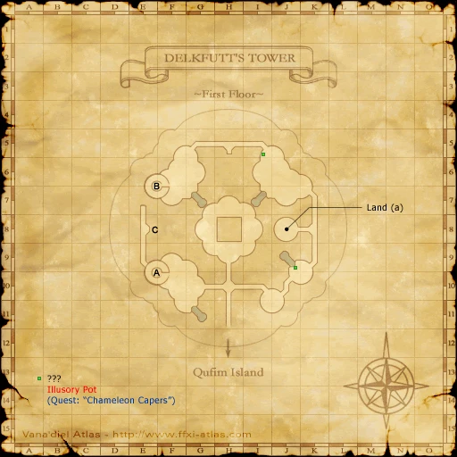
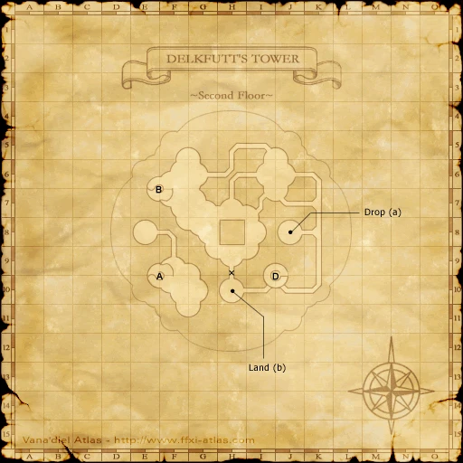
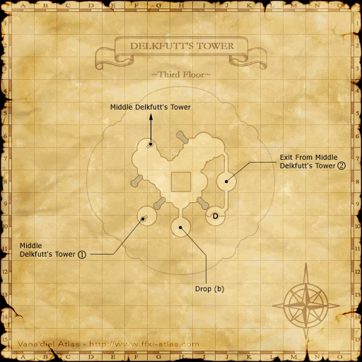

Before you begin
- Chains of Promathia enabled; reach Qufim Island. No national Rank 6 requirement.
Starting point
Entrance from Qufim Island · Lower Delkfutt's Tower
People in this mission

Walkthrough
- Enter Lower Delkfutt's Tower directly from Qufim Island. Accept and finish the opening story sequence.
- Enter Upper Jeuno for the clinic scene.
- Speak to Monberaux inside the infirmary at G-10. Finish the following scenes and receive the Mysterious Amulet.
Battle and progress notes
- The opening can be declined. If you declined it, use Tales’ Beginning inside Lower Delkfutt’s Tower to begin it later.
Completion and reward
Mysterious Amulet key item.
What this opens
- CoP 1-2: Below the Arks
Area maps
Open a zone below, then select a map to enlarge it. Match the named floors and grid coordinates in the steps; these are reference area maps, not a live position tracker.
Lower Delkfutt's Tower












Qufim Island


Upper Jeuno


Zone guides
References
Steps are an original summary of the linked walkthrough and reviewed source. Other servers’ bonus rewards are not included. How to read requirements, waits and battlefield notes.
Additional level-75 reference
|
Walkthrough
- In order to activate this mission, you must enter Lower Delkfutt Tower after installing the Chains of Promathia expansion pack; upon doing so, you will be treated to a rather interesting cutscene.
- After the cutscene has finished you must head to Upper Jeuno where another cutscene awaits you.
- Once you have arrived in Upper Jeuno, head to Monberaux (G-10, inside the Infirmary) and you will be shown the final cutscene of this mission.
Game Description
- Mission Orders
- Brilliant lights, fearsome beasts, a mysterious laboratory... What do all these have to do with the strange boy brought back to Doctor Monberaux's clinic in Upper Jeuno?
Adapted from Eden Wiki: The Rites of Life · Contributors and history · CC BY-SA 4.0. Revision 8985. Layout, links and optional background text adapted for Zenith.